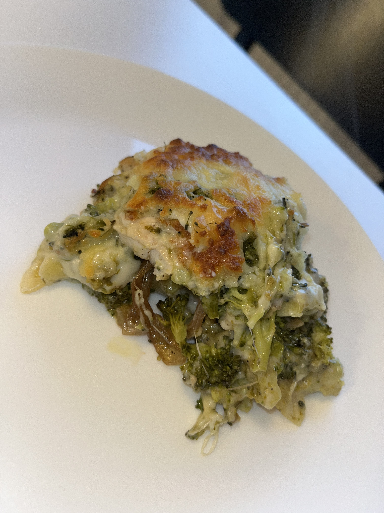

Brocolis Pesto Lasagna

Ingrédients :
- Epices
- Sel
- Poivre
- Curcuma
- gingembre
- Feuilles de lasagne
- 300g de brocolis
- Pesto
- 100g de blanc de poulet
- Mozarella
- 1 oignon
- Vinaigre balsamique
- Huile d'olive
- Sauce béchamel
Préparation :
- Tout d'abord, on fait cuire les brocolis dans de l'eau bouillante puis on les égoutte.
- On découpe les oignons en fines lamelles, les met à feu doux dans une poêle avec sel, poivre, puis vinaigre balsamique au bout d'un moment pour les caraméliser un peu.
- On découpe le blanc de poulet en très fines lamelles qu'on cuit dans de l'huile avec toutes les épices.
- C'est là qu'intervient aussi la cuisson de la sauce béchamel mais on va partir du principe que c'est basique, donc pas besoin d'expliciter le processus.
- On dresse le tout sous forme de lasagnes, donc : feuille de lasagne, béchamel, brocolis, poulet, pesto (mais pas énormément parce qu'il a un goût fort), oignons, et rebelote, et on met bien la mozarella râpée à la toute fin.
- On enfourne à 180 degrés pendant une vingtaine de minutes (testez la cuisson avec un couteau), puis enjoy!
Mon avis :
Yes, encore une combinaison de légumes et de pesto mdr, et encore une fois, quel plaisir. Je suis tombée sur cette combinaison sur Instagram mais il a fallu que j'y ramène mon grain de sel et que j'y rajoute du poulet et les oignons. Ce que j'adore avec ma version c'est que déjà, les oignons comme ça c'est un banger, mais en plus le poulet apporte les protéines et rend ce repas vraiment équilibré, bref, une pure merveille!